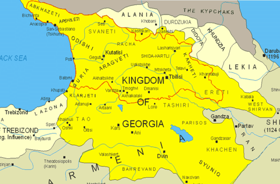
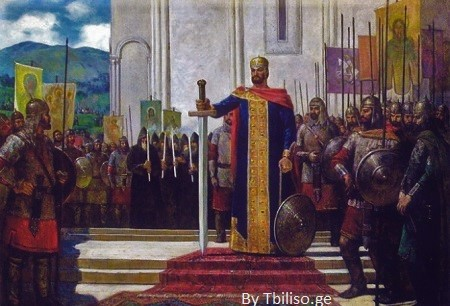
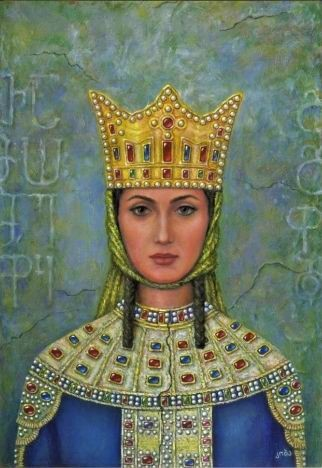
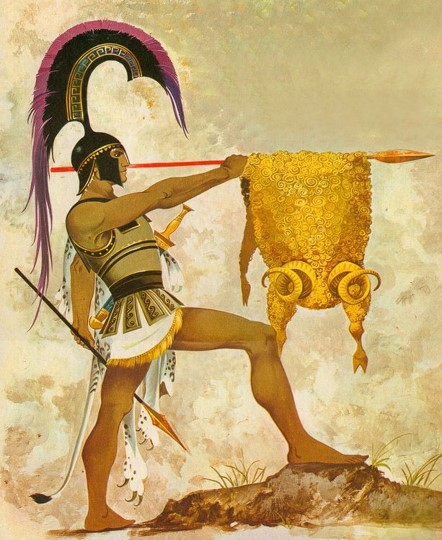

HISTORICAL
HIGHLIGHTS
The Kingdom of Georgia
Sakartvelo became a kingdom about 4 B.C and Christianity was introduced in A.D 337.
During the reign of Queen Tamara (1184-1213), its territory included the whole of Transcaucasia.
During the 13th century, Tamerlane and the Mongols decimated its population.
From the 16th century on, the country was the scene of a struggle between Persia and Turkey.
The likelihood is great that the Georgians, whose name for themselves is Kartveli
“Georgian” is derived from the Persian name for them, Gorj.
They have always lived in this region, known to them as Sakartvelo.
People and Language
Ethnically, contemporary Georgia is not homogeneous but reflects the intermixtures and successions of the Caucasus region.
About four-fifths of the people are Georgians; the rest are Armenians, Russians, Azerbaijanis, and,
in smaller numbers, Ossetes, Greeks, Abkhazians, and others.
The Georgian language is a member of the Kartvelian (South Caucasian) family of languages.
Georgian has its own alphabet, which is thought to have evolved about the 5th century, and there are many dialects.
A number of other Caucasian languages are spoken by minority groups; many are unwritten.

David The Builder
One of the most important kings of Georgian kingdom was crowned when hewas only 16.
He inherited not only political problems but also results of earthquakes in previous years.
The king managed to strengthen the country and the neighbors of our country by defeating Seljuks in the battle of “miraculous victory”.
David The Builder begun the golden age of Georgia.

The Army
David formed a standing Georgian army loyal to him alone. According to one estimate,
it may have been as large as 40,000 men, including an elite guard unit. David also instituted a strict discipline system for the army;
The army would be paid a salary rather than depend on loot, and swearing or rogue behavior would be disciplined.
In addition to military successes, David also aimed to reform the state. He was known as a precocious king.
He even took his library with him on military campaigns. David took a strong interest in bettering Georgian society,
and instituted reforms in the medieval church and law.
King Tamar
Tamar was the only woman who was called a king due to her achievements.
One of the most popular computer games, Civilization VI: Rise and Fall has included Georgia as one of the world’s ancient nations lead by her.
The game provides facts about her and is introduced as a smart and diplomatic woman.
Once King Tamar strengthened her power and gained reliable support, she restored the expansionist foreign course of her ancestors.

FAME OF MIDDLE AGES
The nobles ordered Tamar to marry to provide a successor to the throne.
They chose Rus Prince Yuri, son of the assassinated prince Andrei I Bogolyubsky of Vladimir-Suzdal.
Approved by Tamar’s aunt Rusudan, Yuri was brought to Georgia to marry Tamar in 1185. The prince was a skilled soldier,
but an unreasonable person and not a good husband. Slowly Tamar started to gain confidence in her rights as a queen.
Tamar appointed her advocate Anton Gnolistavisdze as chancellor and gradually increased her power base in the courts.
One of the most remarkable events of King Tamar’s governance was the establishment of the Black Sea coast’s Empire of Trebizond in 1204.
The Golden Fleece
A famous Greek myth about Argonauts is about west Georgia. It was a powerful Colchis Kingdom (Kolkheti), where the king was Aeëtes. Argonauts arrived exactly there to take a Golden Fleece.
Most of the territory that in the legend is real and described in a correct way.

Colchis Kingdom - Story of Jason and Medea
Colchis owned a Golden Fleece.
It was Aries that had golden wool, and, on this Fleece, it was written how to obtain the gold through the river’s sand.
Jason managed to succeed in Kutaisi thanks to the help of the King’s daughter, Medea, who fell in love with Jason and helped him.
The goddess Hera, the protector of Jason and the Argo, acted as Cupid in this love story, to secure Medea’s support for Jason.
Medea provided Jason with an ointment that would protect him from the bulls' flames and a potion that would make the Sleepless Dragon fall asleep.
She also taught him how to defeat the skeletons that would come out of the dragon teeth sowed in the fields.
The adventures of Jason in Kutaisi ended there, as after having the Golden Fleece in his power he returned home along with Medea.